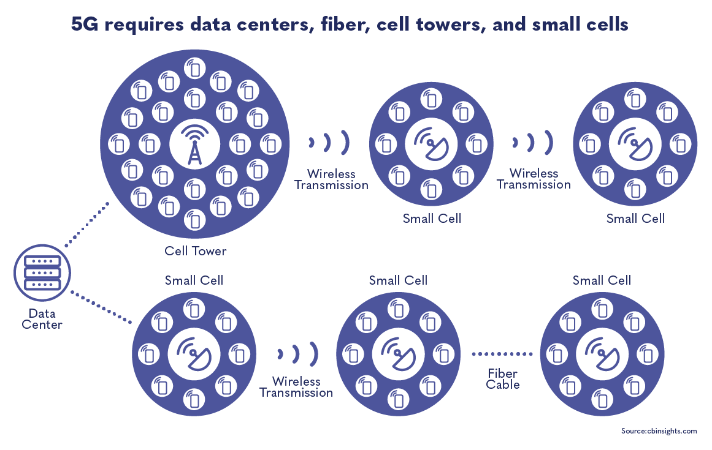
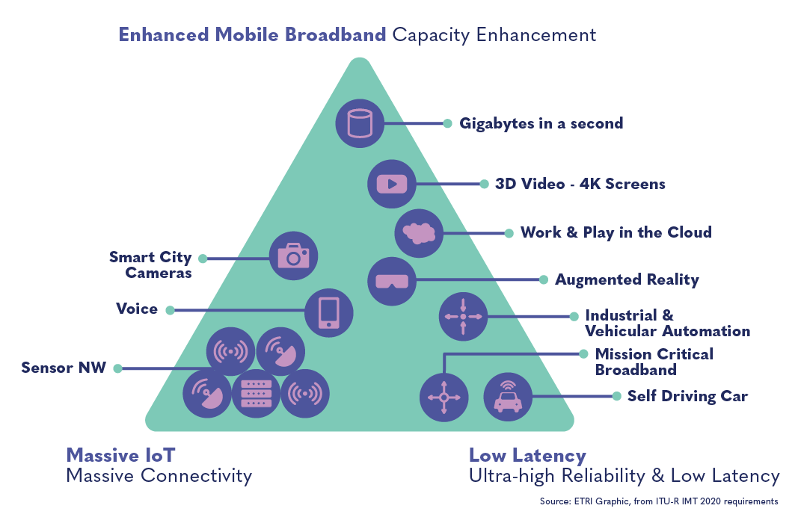
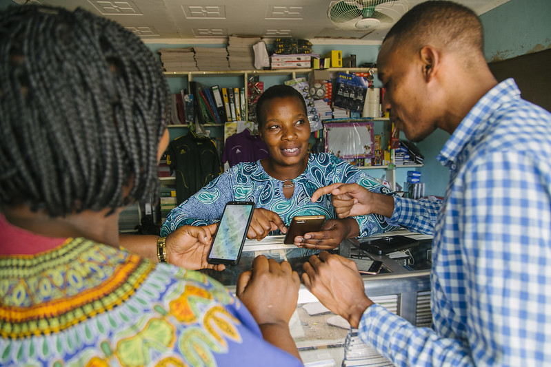
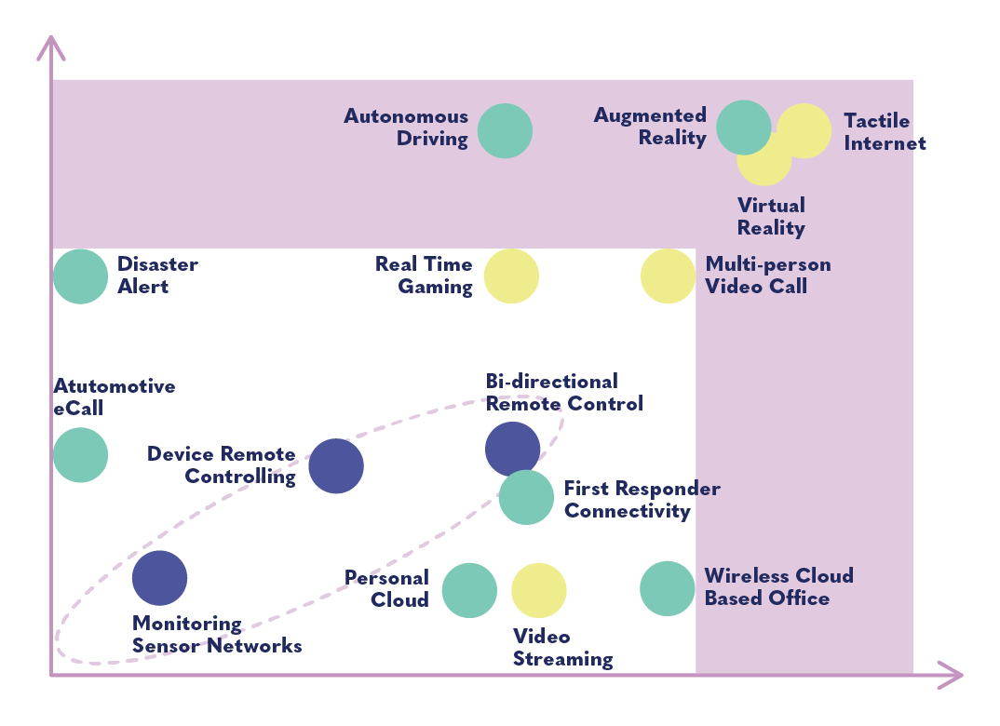

5G Technology
What is 5G technology?

New generations of technology come along almost every 10 years. 5G, or the fifth generation of mobile technologies, is expected to be 100 times faster and have 1000 times more capacity than previous generations, facilitating fast and reliable connectivity, wider data flow, and machine-to-machine communications. 5G is not designed primarily to connect people, but rather to connect devices. 2G facilitated access to voice calls and texting, 3G drove video and social media services, and 4G realized digital streaming and data-heavy applications. 5G will support smart homes, 3D video, the cloud, remote medical services, virtual and augmented reality, and machine-to-machine communications for industry automation. However, even as the United States, Europe, and the Asia Pacific region transition from 4G to 5G, many other parts of the world still rely primarily on 2G and 3G networks, and further disparities exist between rural and urban connectivity. Watch this video for an introduction to 5G technology and both the excitement and caution surrounding it.
What do we mean by “G?”“G” refers to generation and indicates a threshold for a significant shift in capability, architecture, and technology. These designations are made by the telecommunications industry through the standards-setting authority known as 3GPP. 3GPP creates new technical specifications approximately every 10 years, hence the use of the word “generation”. An alternate naming convention uses the acronym IMT (which stands for International Mobile Telecommunications), along with the year the standard became official. As an example, you may see 3G also referred to as IMT 2000.
| 1G | Allowed analogue phone calls; brought mobile devices (mobility) |
| 2G | Allowed digital phone calls and messaging; allowed for mass adoption, and eventually enabled mobile data (2.5G) |
| 3G | Allowed phone calls, messaging, and internet access |
| 3.5G | Allowed stronger internet |
| 4G | Allowed faster internet, (better video streaming) |
| 5G | “The Internet of Things” Will allow devices to connect to one another |
| 6G | “The Internet of Senses” Little is yet known |
This video provides a simplified overview of 1G-4G.
There is a gap in many developing countries between the cellular standard that users subscribe to and the standard they actually use: many subscribe to 4G, but, because it does not perform as advertised, may switch back to 3G. This switch or “fallback” is not always evident to the consumer, and it may be harder to notice with 5G compared to previous networks.
Even once 5G infrastructure is in place and users have access to it through capable devices, the technology is not necessarily guaranteed to work as promised: in fact, chances are it will not. 5G will still rely on 3G and 4G technologies, and carriers will still be operating their 3G and 4G networks in parallel.
How does 5G technology work?
There are several key performance indicators (KPIs) that 5G hopes to achieve. Basically, 5G will strengthen cellular networks by using more radio frequencies along with new techniques to strengthen and multiply connection points. This means faster connection: cutting down the time between a click on your device and the time it takes the phone to execute that command. This also will allow more devices to connect to one another through the Internet of Things.
Understanding SpectrumTo understand 5G, it is important to understand a bit about the electromagnetic radio spectrum. This video gives an overview of how cell phones use spectrum.
5G will bring faster speed and stronger services by using more spectrum. To establish a 5G network, it is necessary to secure spectrum for that purpose in advance. Governments and companies have to negotiate spectrum—usually by auctioning off “bands,” sometimes for huge sums. Spectrum allocation can be a very complicated and political process. Many experts fear that 5G, which requires lots of spectrum, threatens so-called “network diversity”—the idea that spectrum should be used for a variety of purposes across government, business, and society.
For more on spectrum allocation, see the Internet Society’s publication on Innovations in Spectrum Management (2019).
5G hopes to tap into new, unused bands at the top of the radio spectrum, known as millimeter waves (mmwaves). These are much less crowded than the lower bands, allowing faster data transfers. But millimeter waves are tricky: their maximum range is approximately 1.6 km, and trees, walls, rain, and fog can limit the distance the signal travels to only 1km. As a result, 5G will require a higher volume of cell towers, compared to the few massive towers required for 4G. 5G will need towers every 100 meters outside, and every 50 meters inside, which is why 5G is best suited for dense urban centers (as discussed in more detail below). The theoretical potential of millimeter waves is exciting, but in reality, most 5G carriers are trying to deploy 5G in the lower parts of the spectrum.
5G technology runs on fiber infrastructure. Fiber can be understood as the nervous system of a mobile network, connecting data centers to cell towers.

Mobile operators and international standards setting bodies, including the International Telecommunications Union, believe fiber is the best connective material due to its long life, high capacity, high reliability, and ability to support very high traffic. But the initial investment is expensive (a 2017 Deloitte study estimated that 5G deployment in the United States would require at least $130 billion investment in fiber) and often cost prohibitive to suppliers and operators, especially in developing countries and rural areas. 5G is sometimes advertised as a replacement for fiber; however, fiber and 5G are complementary technologies.
The chart below is often used to explain the primary features that make up 5G technology (enhanced capacity, low latency, and enhanced connectivity) and the potential applications of these features.

The market of 5G providers is very concentrated, even more so than for previous generations. A handful of companies are capable of supplying telecommunications operators with the necessary technology. Huawei (China), Ericsson (Sweden), and Nokia (Finland) have led the charge to expand 5G and typically interface with local telecom companies, sometimes providing end-to-end equipment and maintenance services.
In 2019, the United States government passed a defense authorization spending act, NDAA Section 889, that essentially prohibits U.S. agencies from using telecommunications equipment made by Chinese suppliers (for example, Huawei and ZTE). The restriction was put in place over fears that the Chinese government may use its telecommunications infrastructure for espionage (see more in the Risks section). NDAA Section 889 could apply to any contracts made with the U.S. government, and so it is critical for organizations considering partnerships with Chinese suppliers to keep in mind the legal challenges of trying to engage with both the U.S. and Chinese governments in relation to 5G.
Of course, this means that the choice of 5G manufacturers suddenly becomes much more limited. Chinese companies have by far the largest market share of 5G technology. Huawei has the most patents filed, and the strongest lobbying presence within the International Telecommunications Union.
The 5G playing field is fiercely political, with strong tensions between China and the United States. Because 5G technology is closely connected to chip manufacturing, it is important to keep an eye on “the chip wars”. Suppliers reliant on American and Chinese companies are likely to get caught in the crossfire as the trade war between these countries worsens, because supply chains and manufacturing of equipment is often dependent on both countries. Peter Bloom, founder of Rhizomatica, points out that the global chip market is projected to grow to $22.41 billion by 2026. Bloom cautions: “The push towards 5G encompasses a plethora of interest groups, particularly governments, financing institutions, and telecommunications companies, that demands to be better analyzed in order to understand where things are moving, whose interests are being served, and the possible consequences of these changes.”
How is 5G relevant in civic space and for democracy?
5G is the first generation that does not prioritize access and connectivity for humans. Instead, 5G provides a level of super-connectivity for luxury use cases and specific environments; for instance, for enhanced virtual reality experiences and massively multiplayer video games. Many of the use cases advertised, like remote surgery, are theoretical or experimental and do not yet exist widely in society. Indeed, telesurgery is one of the most-often-cited examples of the benefits of 5G, but it remains a prototype technology. Implementing this technology at scale would require tackling many technical and legal issues to work out, along with developing a global network.
Access to education, healthcare, and information are fundamental rights; but multiplayer video games, virtual reality, and autonomous vehicles—all of which would rely on 5G – are not. 5G is a distraction from the critical infrastructure needed to get people online to fully enjoy their fundamental rights and to allow for democratic functioning. The focus on 5G actually diverts attention away from immediate solutions to improving access and bridging the digital divide.
The percentage of the global population using the internet is on the rise, but a significant portion of the world is still not connected to the internet. 5G is not likely to address the divide in internet access between rural and urban populations, or between developed and developing economies. What is needed to improve internet access in industrially developing contexts is more fiber, more internet access points (IXPs), more cell towers, more Internet routers, more wireless spectrum, and reliable electricity. In an industry white paper, only one out of 125 pages discusses a “scaled down” version of 5G that will address the needs of areas with extremely low average revenue per user (ARPU). These solutions include further limiting the geographic areas of service.

This presentation by the American corporation INTEL at an ITU regional forum in 2016 advertises the usual aspirations for 5G: autonomous vehicles (labeled as “smart transportation”), virtual reality (labeled as “e-learning”), remote surgery (labeled as “e-health”), and sensors to support water management and agriculture. Similar highly specific and theoretical future use cases—autonomous vehicles, industrial automation , smart homes, smart cities, smart logistics—were advertised during a 2020 webinar hosted by the Kenya ICT Action Network in partnership with Huawi.
In both presentations, the emphasis is on connecting objects, demonstrating how 5G is designed for big industries, rather than for individuals. Even if 5G were accessible in remote rural areas, individuals would likely have to purchase the most expensive, unlimited data plans to access 5G. This cost comes on top of having to acquire 5G-compatible smartphones and devices. Telecommunications companies themselves estimate that only 3% of Sub Saharan Africa will use 5G. It is estimated that by 2025, most people will still be using 3G (roughly 60%) and 4G (roughly 40%), which is a technology that has existed for 10 years.
5G Broadband / Fixed Wireless Access (FWA)
Because most people in industrially developing contexts connect to the internet via cell phone infrastructure and mobile broadband, what would be most useful to them would be “5G broadband,” also called 5G Fixed Wireless Access (FWA). FWA is designed to replace “last mile” infrastructure with a wireless 5G network. Indeed, that “last mile”—the final distance to the end user—is often the biggest barrier to internet access across the world. But because the vast majority of these 5G networks will rely on physical fiber connection, FWA without fiber won’t be of the same quality. These FWA networks will also be more expensive for network operators to maintain than traditional infrastructure or “standard fixed broadband.”
This article by one of the top 5G providers, Ericsson, asserts that FWA will be one of the main uses of 5G, but the article shows that the operators will have a wide ability to adjust their rates, and also admits that many markets will still be addressed with 3G and 4G.
While 5G requires enormous investment in physical infrastructure, new generations of cellular Wi-Fi access are becoming more accessible and affordable. There is also an increasing variety of “community network” solutions, including Wi-Fi meshnets and sometimes even community-owned fiber. For further reading see: 5G and the Internet of EveryOne: Motivation, Enablers, and Research Agenda, IEEE (2018). These are important alternatives to 5G that should be considered in any context (developed and developing, urban and rural).
“If we are talking about thirst and lack of water, 5G is mainly a new type of drink cocktail, a new flavor to attract sophisticated consumers, as long as you live in profitable places for the service and you can pay for it. Renewal of communications equipment and devices is a business opportunity for manufacturers mainly, but not just the best ‘water’ to the unconnected, rural, … (non-premium clients), even a problem as investment from operators gets first pushed by the trend towards satisfying high paying urban customers and not to spread connectivity to low pay social/universal inclusion customers.” – IGF Dynamic Coalition on Community Networks, in communication with the author of this resource.
It is critical not to forget about previous generation networks. 2G will continue to be important for providing broad coverage. 2G is already very present (around 95% in low- and middle- income countries), requires less data, and carries voice and SMS traffic well, which means that it is a safe and reliable option for many situations. Also, upgrading existing 2G sites to 3G or 4G is less costly than building new sites.
The technology that 5G facilitates (the Internet of Things , smart cities , smart homes) will encourage the installation of chips and sensors in an increasing number of objects. The devices 5G proposes to connect are not primarily phones and computers, but sensors, vehicles, industrial equipment, implanted medical devices, drones, cameras, etc. Linking these devices raises a number of security and privacy concerns, as explored in the Risks section .
The actors that stand to benefit most from 5G are not citizens or democratic governments, but corporate actors. The business model powering 5G centers around industry access to connected devices: in manufacturing, in the auto industry, in transport and logistics, in power generation and efficiency monitoring, etc. 5G will boost the economic growth of those actors able to benefit from it, particularly those invested in automation, but it would be a leap to assume the distribution of these benefits across society.
The introduction of 5G will bring the private sector massively into public space through the network carriers, operators, and other third parties behind the many connected devices. This overtaking of public space by private actors (usually foreign private actors) should be carefully considered from the lens of democracy and fundamental rights. Though the private sector has already entered our public spaces (streets, parks, shopping malls) with previous cellular networks, 5G’s arrival, bringing with it more connected objects and more frequent cell towers, will increase this presence.
While 5G networks hold the promise of enhanced connectivity, there is growing concern about their misuse for anti-democratic practices. Governments in various regions have been observed using technology to obstruct transparency and suppress dissent, with instances of internet shutdowns during elections and surveillance of political opponents. From 2014 to 2016 for example, internet shutdowns were used in a third of the elections in sub-Saharan Africa.
These practices are often facilitated by collaborations with companies providing advanced surveillance tools, enabling the monitoring of journalists and activists without due process. The substantial increase in data transmission that 5G offers raises the stakes, potentially allowing for more pervasive surveillance and more significant threats to the privacy and rights of individuals, particularly those marginalized. Furthermore, as electoral systems become more technologically reliant, with initiatives to move voting online, the risk of cyberattacks exploiting 5G vulnerabilities could compromise the integrity of democratic elections, making the protection against such intrusions a critical priority.
Opportunities
The advertised benefits of 5G usually fall into three areas, as outlined below. A fourth area of benefits will also be explained—though less often cited in the literature, it would be the most directly beneficial for citizens. It should be noted that these benefits will not be available soon, and perhaps never available widely. Many of these will remain elite services, only available under precise conditions and for high cost. Others will require standardization, legal and regulatory infrastructure, and widespread adoption before they can become a social reality.
The chart below, taken from a GSMA report, shows the generally listed benefits of 5G. The benefits in the white section could be achieved on previous networks like 4G, and those in the purple section would require 5G. This further emphasizes the fact that many of the objectives of 5G are actually possible without it.

Augmented Reality & Tactile Internet5G has many potential uses in entertainment, especially in gaming. Low latency will allow massively multiplayer games, higher quality video conferencing, faster downloading of high-quality videos, etc. Augmented and virtual reality are advertised as ways to create immersive experiences in online learning. 5G’s ability to connect devices will allow for wearable medical devices that can be controlled remotely (though not without cybersecurity risks). Probably the most exciting example of “tactile internet” is the possibility of remote surgery: an operation could be performed by a robot that is remotely controlled by a surgeon somewhere across the world. The systems necessary for this are very much in their infancy and will also depend on the development of other technology, as well as regulatory and legal standards and a viable business model.
The major benefit of 5G will come in the automobile sector. It is hoped that the high speed of 5G will allow cars to coordinate safely with one another and with other infrastructure. For self-driving vehicles to be safe, they will need to be able to communicate with one another and with everything around them within milliseconds. The super speed of 5G is important for achieving this. (At the same time, 5G raises other security concerns for autonomous vehicles.)
Machine-to-machine connectivity, or M2M, already exists in many devices and services , but 5G would further facilitate this. This stands to benefit industrial players (manufacturers, logistics suppliers, etc.) most of all, but could arguably benefit individuals or cities who want to track their use of certain resources like energy or water. Installed sensors can be used to collect data which in turn can be analyzed for efficiency and the system can then be optimized. Typical M2M applications in the smart home include thermostats and smoke detectors, consumer electronics, and healthcare monitoring. It should be noted that many such devices can operate on 4G, 3G, and even 2G networks.
Probably the most relevant benefit of 5G to industrially developing contexts will be the potential of FWA. FWA is less often cited in the marketing literature, because it does not allow the industrial benefits promised in full. Because it allows breadth of connectivity rather than revolutionary strength or intensity, it should be thought of as a different kind of “5G”. (See the 5G Broadband / Fixed Wireless Access section.) As explained, FWA will still require infrastructure investments, and will not necessarily be more affordable than broadband alternatives due to the increasing power given to the carriers.
Risks
The use of emerging technologies can also create risks in civil society programming. Read below to learn how to discern the possible dangers associated with 5G in DRG work, as well as how to mitigate unintended—and intended—consequences.
Personal PrivacyWith 5G connecting more and more devices, the private sector will be moving further into public space through sensors, cameras, chips, etc. Many connected devices will be things we never expected to be connected to the internet before: washing machines, toilets, cribs, etc. Some will even be inside our bodies, like smart pacemakers. The placement of devices with chips into our homes and environments facilitates the collection of data about us, as well as other forms of surveillance.
A growing number of third-party actors have sophisticated methods for collecting and analyzing personal data. Some devices may only ultimately collect meta-data, but this can still seriously reduce privacy. Meta-data is information connected to our communications that does not include the content of those communications: for example, numbers called, websites visited, geographical location, or the time and date a call was made. The EU’s highest court has ruled that this kind of information can be considered just as sensitive as the actual contents of communications because of insights that the data can offer into our private lives. 5G will allow telecommunications operators and other actors access to meta-data that can be assembled for insights about us that reduce our privacy.
Last, 5G requires many small cell base stations, so the presence of these towers will be much closer to people’s homes and workplaces, on street lights, lamp posts, etc. This will make location tracking much more precise and make location privacy nearly impossible.
For most, 5G will be supplied by foreign companies. In the case of Huawei and ZTE, the government of the country these companies operate in (the People’s Republic of China) do not uphold human rights obligations or democratic values. For this reason, some governments are concerned about the potential of abuse of data for foreign espionage. Several countries, including the United States, Australia, and the United Kingdom, have taken actions to limit the use of Chinese equipment in their 5G networks due to fears of potential spying. A 2019 report on the security risks of 5G by the European Commission and European Agency for Cybersecurity warns against using a single supplier to provide 5G infrastructure because of espionage risks. The general argument against a single supplier (usually made against the Chinese supplier Huawei), is that if the supplier provides the core network infrastructure for 5G, the supplier’s government (China) will gain immense surveillance capacity through meta-data or even through a “backdoor” vulnerability. Government spying through the private sector and telecom equipment is commonplace, and China is not the only culprit. But the massive network capacity of 5G and the many connected devices collecting personal information will enhance the information at stake and the risk.
As a general rule, the more digitally connected we are, the more vulnerable we become to cyber threats. 5G aims to make us and our devices ultra-connected. If a self-driving car on a smart grid is hacked or breaks down, this could bring immediate physical danger, not just information leakages. 5G centralizes infrastructure around a core, which makes it especially vulnerable. Because of the wide application of 5G based networks, 5G brings the increased possibility of internet shutdowns, endangering large parts of the network.
5G infrastructure can simply have technical deficiencies. Because 5G technology is still in pilot phases, many of these deficiencies are not yet known. 5G advertises some enhanced security functions, but security holes remain because devices will still be connected to older networks.
As A4AI explains, “The rollout of 5G technology will demand significant investment in infrastructure, including in new towers capable of providing more capacity, and bigger data centres running on efficient energy.” These costs will likely be passed on to consumers, who will have to purchase compatible devices and sufficient data. 5G requires massive infrastructure investment—even in places with strong 4G infrastructure, existing fiber-optic cables, good last-mile connections, and reliable electricity. Estimates for the total cost of 5G deployment—including investment in technology and spectrum—are as high as $2.7 trillion USD. Due to the many security risks, regulatory uncertainties, and generally untested nature of the technology, 5G is not necessarily a safe investment even in wealthy urban centers. The high cost of introducing 5G will be an obstacle for expansion and prices are unlikely to fall enough to make 5G widely affordable.
Because this is such a complex new product, there is a risk of purchasing low-quality equipment. 5G is heavily reliant on software and services from third-party suppliers, which multiplies the chance of defects in parts of the equipment (poorly written code, poor engineering, etc.). The process of patching these flaws can be long, complicated, and costly. Some vulnerabilities may go unidentified for a long time but can suddenly cause severe security problems. Lack of compliance to industry or legal standards could cause similar problems. In some cases, new equipment may not be flawed or faulty, but it may simply be incompatible with existing equipment or with other purchases from other suppliers. Moreover, there will be large costs just to run the 5G network properly: securing it from cyberattacks, patching holes and addressing flaws, and keeping up the material infrastructure. Skilled and trusted human operators are needed for these tasks.
Installing new infrastructure means dependency on private sector actors, usually from foreign countries. Over-reliance on foreign private actors raises multiple concerns, as mentioned, related to cybersecurity, privacy, espionage, excessive cost, compatibility, etc. Because there are only a handful of actors that are fully capable of supplying 5G, there is also the risk of becoming dependent on a foreign country. With current geopolitical tensions between the U.S. and China, countries trying to install 5G technology may get caught in the crossfire of a trade war. As Jan-Peter Kleinhans, a security and 5G expert at Stiftung Neue Verantwortung (SNV), explains “The case of Huawei and 5G is part of a broader development in information and communications technology (ICT). We are moving away from a unipolar world with the U.S. as the technology leader, to a bipolar world in which China plays an increasingly dominant role in ICT development.” The financial burdens of this bipolar world will be passed onto suppliers and customers.
“Without a comprehensive plan for fiber infrastructure, 5G will not revolutionize Internet access or speeds for rural customers. So anytime the industry is asserting that 5G will revolutionize rural broadband access, they are more than just hyping it, they are just plainly misleading people.” — Ernesto Falcon, the Electronic Frontier Foundation.
5G is not a lucrative investment for carriers in more rural areas and developing contexts, where the density of potentially connected devices is lower. There is industry consensus, supported by the ITU itself, that the initial deployment of 5G will be in dense urban areas, particularly wealthy areas with industry presence. Rural and poorer areas with less existing infrastructure are likely to be left behind because it is not a good commercial investment for the private sector. For rural and even suburban areas, millimeter waves and cellular networks that require dense cell towers will likely not be a viable solution. As a result, 5G will not bridge the digital divide for lower income and urban areas. It will reinforce it by giving super-connectivity to those who already have access and can afford even more expensive devices, while making the cost of connectivity high for others.
Huawei has shared that the typical 5G site has power requirements over 11.5 kilowatts, almost 70% more than sites deploying 2G, 3G, and 4G. Some estimate 5G technology will use two to three times more energy than previous mobile technologies. 5G will require more infrastructure, which means more power supply and more battery capacity, all of which will have environmental consequences. The most significant environmental issues associated with implementation will come from manufacturing the many component parts, along with the proliferation of new devices that will use the 5G network. 5G will encourage more demand and consumption of digital devices, and therefore the creation of more e-waste, which will also have serious environmental consequences. According to Peter Bloom, founder of Rhizomatica, most environmental damages from 5G will take place in the global south. This will include damage to the environment and to communities where the mining of materials and minerals takes place, as well as pollution from electronic waste. In the United States, the National Oceanic and Atmospheric Administration and NASA reported last year that the decision to open up high spectrum bands (24 gigahertz spectrum) would affect weather forecasting capabilities for decades.
Questions
To understand the potential of 5G for your work environment or community, ask yourself these questions to assess if 5G is the most appropriate, secure, cost effective, and human-centric solution:
-
Are people already able to connect to the internet sufficiently? Is the necessary infrastructure (fiber, internet access points, electricity) in place for people to connect to the internet through 3G or 4G, or through Wi-Fi?
-
Are the conditions in place to effectively deploy 5G? That is, is there sufficient fiber backhaul and 4G infrastructure (recall that 5G is not yet a standalone technology).
-
What specific use case(s) do you have for 5G that would not be achievable using a previous generation network?
-
What other plans are being made to address the digital divide through Wi-Fi deployment and mesh networks, digital literacy and digital training, etc.?
-
Who stands to benefit from 5G deployment? Who will be able to access 5G? Do they have the appropriate devices and sufficient data? Will access be affordable?
-
Who is supplying the infrastructure? How much can they be trusted regarding quality, pricing, security, data privacy, and potential espionage?
-
Do the benefits of 5G outweigh the costs and risks (in relation to security, financial investment, and potential geopolitical consequences)?
-
Are there sufficient skilled human resources to maintain the 5G infrastructure? How will failures and vulnerabilities be dealt with?
Case Studies
Latin America and the Caribbean5G: The Driver for the Next-Generation Digital Society in Latin America and the Caribbean
“Many countries around the world are in a hurry to adopt 5G to quickly secure the significant economic and social benefits that it brings. Given the enormous opportunities that 5G networks will create, Latin American and Caribbean (LAC) countries must actively adopt 5G. However, to successfully deploy 5G networks in the region, it is important to resolve the challenges that they will face, including high implementation costs, securing spectrum, the need to develop institutions, and issues around activation. For 5G networks to be successfully established and utilized, LAC governments must take a number of actions, including regulatory improvement, establishing institutions, and providing financial support related to investment in the 5G network.”
The United Kingdom was among the first markets to launch 5G globally in 2019. As UK operators have ramped up 5G investment, the market has been on par with other European countries in terms of performance, but still lags behind “5G pioneers” like South Korea and China. In 2020, the British government banned operators from using 5G equipment supplied by Chinese telecommunications company Huawei due to security concerns, setting a deadline of 2023 for the removal of Huawei’s equipment and services from core network functions and 2027 for complete removal. The Digital Connectivity Forum warned in 2022 that the UK was at risk of not fully tapping into the potential of 5G due to insufficient investment, which could hurt the development of new technology services like autonomous vehicles, automated logistics, and telemedicine.
The Gulf states were among the first in the world to launch commercial 5G services, and have invested heavily into 5G and advanced technologies. Local Arab service providers are partnering with ZTE and Nokia to expand their reach in Arab and Asian countries. In many Gulf countries, 5G and Internet service providers are predominantly government-owned, thus consolidating government influence over 5G-backed services or platforms. This could make requests for sharing data or Internet shutdowns easier for governments. Dubai is already deploying facial recognition technology developed by companies with ties to the CCP for its “Police Without Policemen” program. (Ahmed, R. et al., 13)
South Korea established itself as an early market leader for 5G development. Their networks within Asia will be instrumental in the diffusion of 5G development within the region. Currently, South Korea’s Samsung is primarily present in the 5G devices market. Samsung is under consideration as a replacement for Huawei in discussions by the “D10 Club,” a telecoms supplier group that was established by the UK and consisting of G7 members plus India, Australia, and South Korea. However, details of the D10 Club agenda have yet to be established. While South Korea and others attempt to expand their role in 5G, ICT decoupling from Huawei and security-trade tradeoffs are proving to make the process complicated. (Ahmed, R. et al., 14)
Which countries have rolled out 5G in Africa?
“Governments in Africa are optimistic that they will one day use 5G to do large-scale farming using drones, introduce autonomous cars into roads, plug into the metaverse, activate smart homes and improve cyber security. Some analysts predict that 5G will add an additional $2.2 trillion to Africa’s economy by 2034. But Africa’s 5G first movers are facing teething problems that stand to delay their 5G goals. The challenges have revolved around spectrum regulation clarity, commercial viability, deployment deadlines, and low citizen purchasing power of 5G enabled smartphones, and expensive internet.” As of mid-2022, Botswana, Egypt, Ethiopia, Gabon, Kenya, Lesotho, Madagascar, Mauritius, Nigeria, Senegal, Seychelles, South Africa, Uganda, and Zimbabwe were testing or had deployed 5G, though many of these countries faced delays in their rollout.
References
Find below the works cited in this resource.
- American Institute of Physics. (2019). NOAA warns 5G spectrum interference presents major threat to weather forecasts.
- Battersby, Stephen. (2017). Spectrum wars: The battle for the airwaves. NewScientist.
- Bleiberg, Joshua & Darrell M. West. (2015). 3 ways to provide Internet access to the developing world. Brookings Institution.
- (2018). Making fixed wireless access a reality. Ericsson Mobility Report.
- Gottfried, Ofer. (2019). Why 4G adoption is stalled in developing countries. The Fast Mode.
- (2019). Financing the Future of 5G.
- Grothaus, Michael. (2019). 5G means you’ll have to say goodbye to your location privacy. Fast Company.
- GSM Association. (2014). Understanding 5G: Perspectives on future technological advancements in mobile.
- GSM Association. (2019). The Mobile Economy: Sub-Saharan Africa.
- GSM Association. (2019). The State of Mobile Internet Connectivity.
- (2019). Who is leading the 5G patent race?
- Isah, Mohammed Engha et al. (2019). Effects of columbite/tantalite (COLTAN) mining activities on water quality in Edege-Mbeki mining district of Nasarawa state, North Central Nigeria. Bulletin of the National Research Centre 43.
- (2018). Setting the Scene for 5G: Opportunities and Challenges.
- Kleinhans, Jan-Peter. (2019). Europe’s 5G challenge and why there is no easy way out. Technode.
- Lavallée, Brian. 5G wireless needs fiber, and lots of it. Ciena.
- Littman, Dan et al. (2017). Communications infrastructure upgrade: The need for deep fiber. Deloitte.
- Low, Cherlynn. (2018). How 5G makes use of millimeter waves. Engadget.
- Maccari, Leonardo et al. (2018). 5G and the Internet of EveryOne: Motivation, Enablers, and Research Agenda. 2018 European Conference on Networks and Communication – IEEE.
- Mundy, Jon. (n.d.). 5G vs fibre – Will 5G replace fibre broadband?
- Newman, Lily Hay. (2019). 5G is more secure than 4G and 3G—Except when it’s not. Wired.
- NGMN Alliance. (2015). 5G White Paper.
- NIS Cooperation Group. (2019). EU coordinated risk assessment of the cybersecurity of 5G networks.
- Privacy International. (2019). Welcome to 5G: Privacy and security in a hyperconnected world (or not?).
- Ahmed, Rumana et al. (2021). 5G and the Future Internet: Implications for Developing Democracies and Human Rights. National Democratic Institute.
- Sarpong, Eleanor. (2019). 5G is here! Can it deliver on affordable access to close the digital divide? Alliance for Affordable Internet.
- Song, Stephen, Rey-Moreno, Carlos & Michael Jensen. (2019). Innovations in Spectrum Management. Internet Society.
- Stevis-Gridneff, Matina. (2020). U. recommends limiting, but not banning, Huawei in 5G rollout. The New York Times.
- UN International Telecommunications Union. (2019). 5G Fifth generation of mobile technologies.
- Zaballos, Antonio Garcia et al. (2020). 5G: The Driver for the Next-Generation Digital Society in Latin America and the Caribbean. Inter-American Development Bank.
Additional Resources
- Association for Progressive Communications held a webinar on 5G and Covid-19.
- Finley, Klint & Joanna Pearlstein. (2020). The WIRED Guide to 5G.
- Rhizomatica: a nonprofit based in Mexico with resources and blog articles on 5G and related topics (in English and Spanish).
- The Prague Proposals: released after the Prague 5G Security Conference in May 2019.
Related Technologies & Trends
Technologies & Trends


Principles for Digital Development
- Understand the Existing Ecosystem
- Reuse and Improve
- Use Open Standards, Open Data, Open Source, and Open Innovation
- Address Privacy & Security